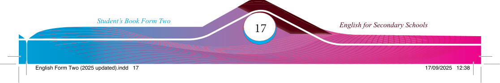
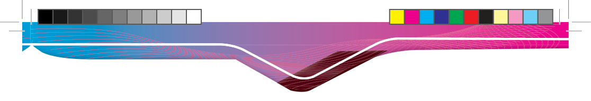

Activity 2
Using cohesive devices in oral presentations
(a) Read the following conversation carefully and respond to the items that follow.
Mkashida: Hello, I heard your call, but I couldn’t respond.
Mkabahati: Really? I was scared because you’ve never done that.
Mkashida: It’s true. I always respond to all calls on time, though sometimes it’s challenging.
Mkabahati: I understand. You’re doing a great job, even though people may not appreciate it.
Mkashida: It’s okay! I usually do only the best I can, so challenges are inevitable.
Mkabahati: Exactly. However, you’ve to work on the challenges; otherwise, you can’t be the best.
Mkashida: I’m trying hard, although it’s not easy to address all the challenges. I sometimes succeed in addressing some, yet new challenges emerge.
Mkabahati: That’s obvious. First of all, I congratulate you on this amazing observation. Then, I encourage you to continue working on the new challenges.
Mkashida: Thank you. My colleagues thought the challenges would discourage me; on the contrary, I used them to excel.
Mkabahati: That’s brilliant! You’ve really surpassed their expectations; moreover, you have taught them to behave professionally.
Mkashida: Probably, you’re right. Initially, they thought I’d complain; in contrast, they heard me celebrating my success from the challenges I’ve been facing.
Mkabahati: Thank you very much for this great lesson for our company. I’m very proud of you, and I think we should give you time to make others learn from you. Congratulations!
Mkashida: Thanks for being positive about it.